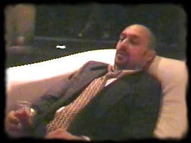
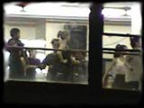
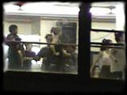

Literary Kicks presents ...

 

"How much love I experienced in these dreams of mine! It was so abundant, so overflowing, that afterwards there wasn't even any need to apply it in practice. But I was never able to dream consistently for more than three months. After this amount of time I would feel an overwhelming need to embrace all people, all mankind, immediately, at once! And that required the presence of at least one person existing in reality. So I would plunge forth into society ..." |
|
Notes From Underground is a CD-Rom movie
based on the novel by Fyodor Dostoevsky. The
64-minute movie updates Dostoevsky's classic
satire from 19th Century St. Petersburg, Russia
to modern-day New York City, and stars Phil Zampino
as the Underground Man. Web designer Levi Asher produced, directed and edited Notes From Underground as an experiment in no-budget filmmaking, using only standard-issue household equipment (an ordinary video camcorder, a Mac 7500 and a copy of Adobe Premiere). Released in October 1998, the movie has already been praised in the Village Voice, Time Digital and Entertainment Weekly. Notes will run on Windows or Mac and requires no disk space or installation other than Quicktime 3.0 (included on disk). The cost is $12.00. Here's how you can get a copy ...
If you prefer paying with American Express, or if the above link does not work for any reason, Notes From Underground is also for sale at the ICat Shopping Mall. Both sites are completely secure, and neither will use your personal information for marketing or other purposes. But if you still don't like buying things online, the CD-Rom can be ordered via mail order or phone from Water Row Books (it hasn't been added to Water Row's online catalog yet, but you can ask for it by name). Check out all the other great beat/underground/alternative books and book-related stuff at Water Row while you're there. You can also get a copy just by sending a check for $12.00, made out to Literary Kicks, to this address:
Literary KicksBe sure to include your own mailing address along with the check.
|
NOTES FROM UNDERGROUND
Cast Of Characters
| The Underground Man | Phil Zampino | |
| The Prostitute | Liza Sabater | The Businessman | Jeff Groth |
| Stephen | Matt Urbania | |
| Zorko | Jon Satriale | |
| Freddy | Nathaniel Wice | |
| Thomas | Michael Coble | |
| The Office Temp | William Perez | |
| Guy Who Likes Cigars | Eduardo Samame | |
| Curious Guy In Office | Mark Napier |
PROGRAM
Part One
| "A Sick Man" |
| "The Insult" |
| "Sublime And Beautiful" |
| "The Duel" |
| "Memories" |
Part Two
| "Dreams" |
| "The Dinner Party" |
| "Waking" |
| "The Office Temp" |
| "Salvation" |
|
Adapted, directed, edited, designed and engineered by
Levi Asher. "Romanian Rhapsody No. 1" by Georges Enesco
used by permission of Leningrad State Orchestra, Iakov
Iurovskii, conductor. Total running time is 64 minutes. Designed for Windows or Mac. Will also run on Linux, Unix or any operating system that supports Quicktime 3.0. More general information about Dostoevsky and his writings can be found at Christiaan Stange's excellent Dostoevsky: The Website.
|